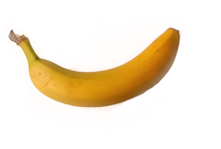

A long time ago, when the world was young Someone put some food on their tong They tasted the food, and thought it was nice Most fruit liked it - but banana's thought twice.
They held a meeting at quarter past eight Whilst the human's were getting home late They decided they didn't want to be eaten they said "No way, we're not going to be beaten"
So time went by, and human's got old Banana's got ready, for their prophets had told That soon shall come the dawn of war. Where humans will rule the earth no more.
line text
The humans knew not of the evil banana's plans They made their cars, guitars and aluminum cans And the banana's began to take over the east While humans knew not, and kept having their feast.
test But time has run out, no more hiding there can be Or else the banana's will kill George, you and me We must take up arms, and fight to the end Because, believe it or not, a banana is not a friend.
